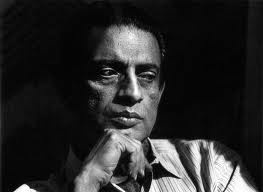

Ray had been subconsciously paying a tribute to Jean Renoir throughout his career, who influenced him the most. He also acknowledged Vittorio De Sica, whom he thought represented Italian Neorealism best, and taught him the cramming of cinematic details into a single shot, and using amateur actors and actresses. Ray professed to have learnt the craft of cinema from Old Hollywood directors such as John Ford, Billy Wilder and Ernst Lubitsch. He had deep respect and admiration for his contemporaries Akira Kurosawa and Ingmar Bergman, whom he considered giants. Among others, he learnt the use of freeze frame shots from François Truffaut, and jump cuts, fades and dissolves from Jean-Luc Godard. Although he admired Godard's "revolutionary" early phase, he thought his later phase was "alien".
Ray adored his peer Michelangelo Antonioni, but hated Blowup, which he considered having "very little inner movement". He was also impressed with Stanley Kubrick's work. Although Ray stated to have had very little influence from Sergei Eisenstein, films such as Pather Panchali, Aparajito, Charulata and Sadgati contains scenes which show striking uses of montage. He also had sketches of Eisenstein.[
Ray's eye for detail was matched by that of his art director Bansi Chandragupta. His influence on the early films was so important that Ray would always write scripts in English before creating a Bengali version, so that the non-Bengali Chandragupta would be able to read it. Subrata Mitra's cinematography garnered praise in Ray's films, although some critics thought that Mitra's eventual departure from Ray lowered its quality. Mitra stopped working for him after Nayak. Mitra developed "bounce lighting", a technique to reflect light from cloth to create a diffused, realistic light even on a set.
